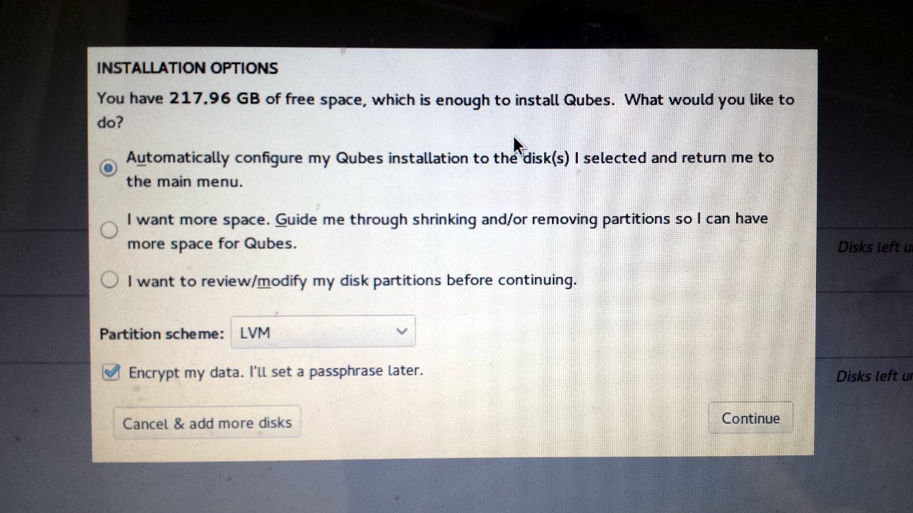

Dual-booting Qubes and Ubuntu with Encrypted Disks
Qubes is my preferred operating system, but occasionally you need to run something else. It’s hard to get certain hardware working the way you expect in Qubes, like webcams or non-disk USB devices. And Qubes VMs don’t support 3D acceleration, which you might occasionally need. You also can’t run VirtualBox inside of Qubes. You normally don’t have any reason to do this, except for very specific cases, like software development with Vagrant.
So here are instructions for how to dual-boot Qubes R2 rc1 and Ubuntu 14.04 LTS, using disk encryption for both. You should be able to adopt this same technique to dual-boot pretty much any two GNU/Linux distros with disk encryption. Keep in mind that if you’re booted into Ubuntu and you get owned, it’s possible for the attacker to then compromise Qubes. (You have to get really, really, really owned for an attacker who compromised Qubes to then compromise Ubuntu.)
To make things simpler, I’m not going to use a swap partition for Ubuntu. I have enough RAM in my computer that I don’t need to, and the GUI partitioning tools don’t make it simple to encrypt your swap with the same key that you use to encrypt your root partition.
Installing Ubuntu
First, boot to an Ubuntu install disk and start the installation like normal. When you get to the “Installation type” screen, choose “Something else”.
Delete all the partitions you already have on your disk. Then select the free space and click the “+” to create Ubuntu’s plaintext /boot partition. Make the size 1024 MB, type “Primary”, location “Beginning of this space”, use as ext4, and set the mount point to /boot. Then click ok.
![(ubuntu2.png)]
Now click the free space again and click the “+” to create Ubuntu’s encrypted root partition. For me, I’m going to make my Ubuntu partition only 20 GB, leaving the rest of the space for Qubes. So for size, I’m using 20480 MB. Set type to “Primary” and location to “Beginning of this space”. For use as, choose “physical volume for encryption”, and enter the disk encryption passphrase you want to use for Ubuntu twice. When you’re done, click ok.
Now your partition table should look like this. In /dev/sda you’ll have sda1, which is /boot, and sda2, which is “unknown”, and then a bunch of free space. But above that you’ll have /dev/mapper/sda2_crypt, which contains your encrypted partition.
Click on /dev/mapper/sda2_crypt and click Change. You can keep use as as ext4, and then select / as the mount point, and click ok.
Now you’ve set up Ubuntu’s partitions. This is important: before you start installing Ubuntu, under “Device for boot loader installation” choose /dev/sda1 instead of /dev/sda. When you install Qubes, the bootloader will be installed to /dev/sda, so it’s important that you put Ubuntu’s bootloader somewhere else.
Your partitioning should look like this:
Now click Install Now. It will pop up an error warning you that you’re not using a swap partition. You can click Continue. Then finish the rest of the steps, and wait for Ubuntu to install. When it’s done go ahead and restart.
Your computer won’t actually boot though, since you installed your Ubuntu bootloader to /dev/sda1 instead of /dev/sda. Instead of trying to boot into your newly installed Ubuntu, let’s install Qubes.
Installing Qubes
Boot to a Qubes install disk. Choose Install Qubes. Click “Installation Destination” and confirm that your hard drive is selected. Then click Done.
It should show you something like this: “You have 217.96 GB of free space, which is enough to install Qubes. What would you like to do?”

As long as it offers to install Qubes in the disk’s free space, the Qubes installer will handle the rest of the partitioning. Choose “Automatically configure my Qubes installation to the disk(s) I selected and return me to the main menu”, and make sure “Encrypt my data” is checked as well. Click Continue.
Type your Qubes disk encryption passphrase twice, and click Save Passphrase.
Then click Begin Installation, and wait for Qubes to install. When it’s done, reboot.
Fixing Grub
You’re not done quite yet. When you turn on your computer this time, it will automatically boot into Qubes. Now we need to add Ubuntu as a boot option.
When you boot into Qubes for the first time you’ll need to follow the setup wizard. Once this is done and you’ve logged in to Qubes, open a terminal in dom0 (in KDE, click the start button, System Tools > Konsole). Then edit /etc/grub.d/40_custom using vim (or nano):
sudo vim /etc/grub.d/40_custom
Add this to the bottom:
menuentry "Ubuntu" {
set root=(hd0,1)
chainloader +1
}
Then reinstall grub:
sudo grub2-mkconfig -o /boot/grub2/grub.cfg
sudo grub2-install /dev/sda
Then reboot the computer.
Wrapping Up
Now when turn on your computer, you immediately start at the grub that comes with Qubes, with the options:
- Qubes, with Xen hypervisor
- Advanced options for Qubes (with Xen hypervisor)
- Ubuntu
If you choose “Qubes, with Xen hypervisor” it asks for your Qubes encryption passphrase and boots into Qubes.
If you choose Ubuntu, you get chainloaded to /dev/sda1, where you installed Ubuntu’s grub. It then asks for Ubuntu’s encryption passphrase and then boots Ubuntu.


Legacy comments, imported from previous version of this blog:
Tschernobyl
April 15, 2016 12:45 PM
The menuentry Ubuntu in Grub won't load. Are you sure this piece of code is correct? Is the hd0,1 part generic, and if not, where will you find your own parameters for this?
menuentry "Ubuntu" { set root=(hd0,1) chainloader +1 }
Palibe Presley
November 25, 2015 03:31 AM
any thoughts about how this would work with dual booting windows instead of ubuntu? i would imagine that as long as i know the correct partition to use it would allow ntldr to load?
Reader
December 12, 2015 04:25 PM
Replace 'Ubuntu' with 'Windows' in the script and you should be good to go.
You're chainloading into the booter on the other partition - whether that other booter is grub2 or ntldr is irrelevant to qubes bootloader.
robotnumber401
September 19, 2015 04:32 PM
How can i do this with my boot files on a seperate hard drive and custom (read: more secure) full disk encryption? Say i have a laptop with weak processing power, the default ubiquity settings may not be secure 'enough'.
Michael Siepmann
November 27, 2015 09:16 AM
Thanks for this post. Re "Keep in mind that if you’re booted into Ubuntu and you get owned, it’s possible for the attacker to then compromise Qubes" how about running Qubes from a USB 3.0 drive, which you remove when using Ubuntu (or whatever other OS is on the computer's internal disk)? According to https://www.qubes-os.org/doc/system-requirements/: "Qubes can be installed on a USB flash drive or external disk, and testing has shown that this works very well. A fast USB 3.0 flash drive is recommended".
Reader
December 12, 2015 04:35 PM
Not sure “Keep in mind that if you’re booted into Ubuntu and you get owned, it’s possible for the attacker to then compromise Qubes” is particularly significant/likely.
Each side is encrypted with it's own / different key. An owned Ubuntu should not be able to affect Qubes encrypted area. I suppose it could delete Qubes, but the value to such attack is to surreptitiously attack and/or observe. You know if Qubes is gone, something's up.
However, I don't have the expertise to answer how vulnerable Qubes boot is to such a Kubuntu owning, nor whether a Maid or USB attack under Kubuntu could impact Qubes.
Seems prudent to execute one's favourite boot checksum verification process - you're still owned, but at least you find out that you are.
Certainly a good question - a link in the article to the answer of which would be appreciated.
"how about running Qubes from a USB 3.0 drive, which you remove when using Ubuntu (or whatever other OS is on the computer’s internal disk)?"
Speed. And ... you've disabled all but internal hard drive boot, and passworded the BIOS, already, right? i.e. No USB boot permitted. Else ... Maid vulnerability exists - what's to say some other malicious USB isn't booted without your knowledge, infecting boot ... owning both Ubuntu and Qubes later. Unknowingly.
Micah Lee
December 12, 2015 05:13 PM
If you're dual-booting Ubuntu and Qubes, and an attacker has owned your Ubuntu, they can modify your Qubes's /boot to do an evil maid attack. Specifically, they can replace the cryptsetup binary with a malicious one. So the next time you boot into Qubes and it asks you to type your encryption passphrase, you'll be typing that into the attacker's program rather than the legit one.
If you store Qubes's /boot on removable media like a USB stick, then this won't be possible. However it might be possible for the attacker to update your BIOS firmware from Ubuntu, which could then spy on any OS you use on that hardware, including Qubes.
ThisGuy
November 1, 2014 03:26 PM
Have you ever thought of doing a post or video on how to install qubes with the most secure settings for journalists when they are not using TAILS? How to set up NETVMs for a VPN, TOR, and how to route them to each APPVM etc? I'd seriously send you $100 bucks if you did ha.
Tony R.
April 21, 2015 04:35 PM
How does one pronounce "$100 bucks"? Is it one hundred dollars-bucks, or is it one hundred bucks-bucks?
hardbox
April 23, 2014 08:35 PM
typo: menuenty "Ubuntu" {
should be: menuentry "Ubuntu" {
micah
April 24, 2014 11:56 AM
Thanks, fixed.
rz
May 15, 2015 06:37 AM
Hey, thanks a lot for this! I've just installed Qubes R3 and Ubuntu 14.04 LTS with dual-boot and it worked fine.
Sam
February 4, 2016 12:31 PM
I am installing Ubuntu 14 and qubes r3 on an external USB HDD. I partitioned a 2tb HDD with /root then ubuntu ext4 1tb, then unallocated space, then 500 gb fat32 /dos.
I installed ubuntu without any problems. When installing Qubes all goes well, it finds the 500gb free space and starts installing until it gets to Dom0 making the swap partition and it crashes. I do not use a swap partition in Ubuntu. Apparently there is some bug with going without a swap partition in Qubes or making it on an external usb hdd. Can I manually partition Qubes to install without a swap partition? Or anyother solution?
Sam.
Sam
February 4, 2016 12:34 PM
/boot, not /root
Reader
December 12, 2015 04:17 PM
" the GUI partitioning tools don’t make it simple to encrypt your swap with the same key that you use to encrypt your root partition."
By your / a reasonable argument, you don't need swap to boot. But you could turn it on after boot, automatically / scripted even - and have it use a different key.
Not sure a different key is good or bad - haven't completely through through that yet.
But the question of '-but do you need to', remains.
davee
May 21, 2015 05:49 AM
Thanks for posting this HOWTO: this is exactly what I was planning to do myself and you've laid out the procedure perfectly. Cheers :-)
Dave.
Dual-booting Qubes and Ubuntu (encrypted disks) | 0ddn1x: tricks with *nix
February 26, 2016 01:00 PM
[…] https://micahflee.com/2014/04/dual-booting-qubes-and-ubuntu-with-encrypted-disks/ […]
Anonymous
May 9, 2016 05:14 AM
How can i get this small change (concept) to get it to work:
Note: I am asking what i must write on /boot/grub/grug.cfg to chainload to the Linux bootloader.
I prefer to have an encrypted /boot partition, with Grub2 on it with a manual edited /boot/grub/grug.cfg file (i get it working with GRUB_ENABLE_DISKCRYPT=t on /etc/default/grub prior to do grub-install with /boot encrypted partition mounted on /boot).
If i boot the PC, it loads Grub2 from inside encrypted partition perfectly well.
What i need is to chainload the other Linux distros (i know how when they are not encrypted).
Beware i only have one partition per Linux (all is inside that partition), so each Linux distro /boot is a folder inside that partition.
Think partition scheme as this: /dev/sda1 (Windows1, not encrypted yet) /dev/sda2 (Windows2, not encrypted yet) /dev/sda3 (Windows3, not encrypted yet) /dev/sda4 (extended) /dev/sda5 (for Grub2 - encrypted) /dev/sda6 (for Linux1 - encrypted) /dev/sda7 (for Linux2 - encrypted) ...etc..
And LUKS as this: /dev/sda5 - LUKS (password0) /dev/sda6 - LUKS (password1) /dev/sda7 - LUKS (password2)
Then over such LUKS, LVM as this: /dev/mapper/Grub2_crypt with one volume group inside it, with one logical partition formated as Ext4 /dev/mapper/Linux1_crypt with one volume group inside it, with two logical partitions SWAP + / formated as Ext4 /dev/mapper/Linux2_crypt with one volume group inside it, with two logical partitions SWAP + / formated as Ext4
How can i cahinload to Linux1 and Linux2 bootloaders that are installed on their respective /boot folders from /boot Grub2, what i must write on grub.cfg file?
lsblk (when all is 'open' looks like this): sda +-sda1 +-sda2 +-sda3 +-sda4 +-sda5 +-Grub2_crypt +-Grub2_vg_crypt-Grub2_lg_crypt +-sda6 +-Linux1_crypt +-Linux1_vg_crypt-Linux1swap_lg_crypt +-Linux1_vg_crypt-Linux1_lg_crypt +-sda7 +-Linux2_crypt +-Linux2_vg_crypt-Linux2swap_lg_crypt +-Linux2_vg_crypt-Linux2_lg_crypt
First things i want: How can i install Grub2 onto Linux1_vg_crypt-Linux1_lg_crypt? How can i install Grub2 onto Linux2_vg_crypt-Linux2_lg_crypt?
Second thing i want: What must i write inside grub.cfg file that is inside Grub2_vg_crypt-Grub2_lg_crypt?
In other words, how to chain from Grub2 menu to a /boot folder inside a LVM partition over LUKS?
I know how to chainload if i have a separate /boot partition for each Linux and they are not encrypted.
But i want unencrypted only the MBR and 62 consecutives sectors, the rest of the disk all encrypted... beware i put three primary partitions telling there is Windows, but it is not, it is to make all inside an extended partition... i could had say the same without any primary partition... ah!, yes BIOS - MBR mode.
After getting on Grub load the others, i will try the same but in a UEFI mode... i am trying to get knownledge on how to do it all by hand, without even install any Linux, that is very important.
Just in case it helps, for a step by step, i am trying all this by starting a Linux LiveCD called SystemRescueCD in pure console mode, the hard way, i know!
Thanks!
Mich
November 2, 2015 12:05 PM
Hello, I have a question, because I did some "mistakes". I installed SolydX and Qubes as described. Everything worked fine. After time I had some problems with qubes, so I decided to reinstall them. In SolydX I deleted Qubes partitions (with knowledge that there is SolydX grub in /dev/sda1). Then I did same steps like before. Now I am not able to boot SolydX. Nothing is happen in this option. I can boot only Qubes. Can you help me? TA+BR, Mich
Garrett
August 1, 2016 10:17 AM
How do you go about booting qubes from grub2? I've literally spent hours editing, updating and rebooting and I keep running into an error with dracut.
Benjamin
June 8, 2017 09:26 PM
I have the exact some problem.
I also get an error right at the beginning of installation process:
efi: EFI_MEMMAP is not enabled. esrt: ESRT header is not in the memory map. ...
How can I solve this ?